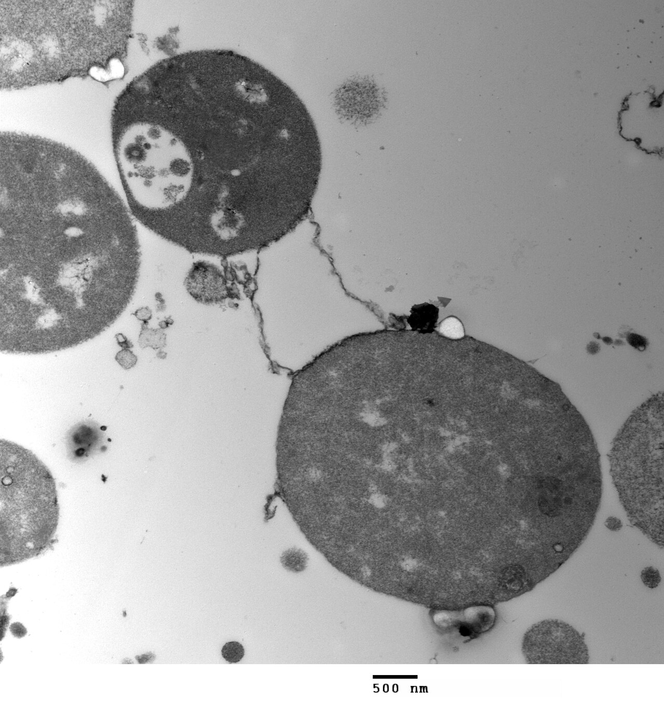
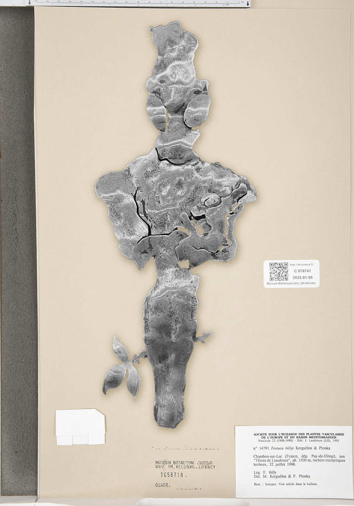
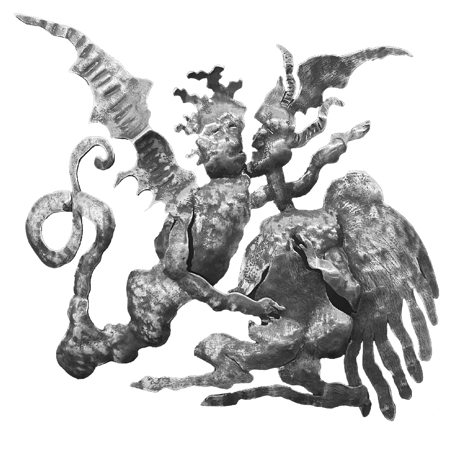
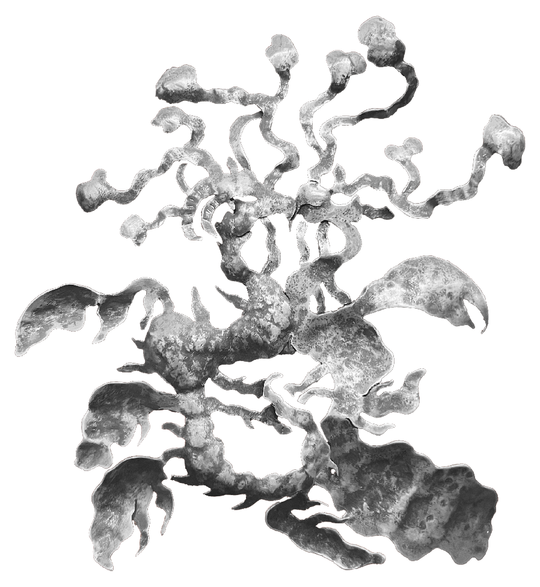
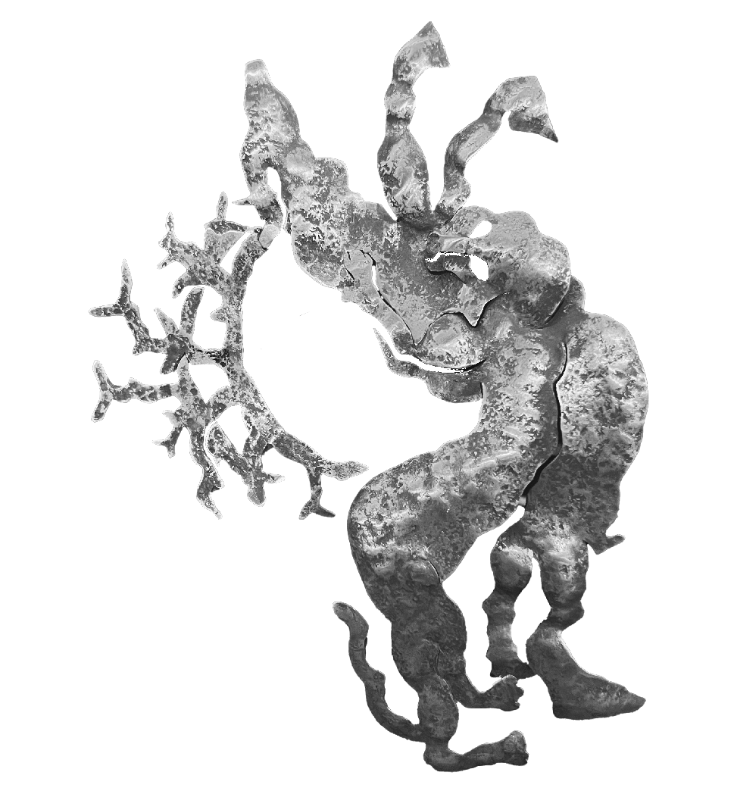
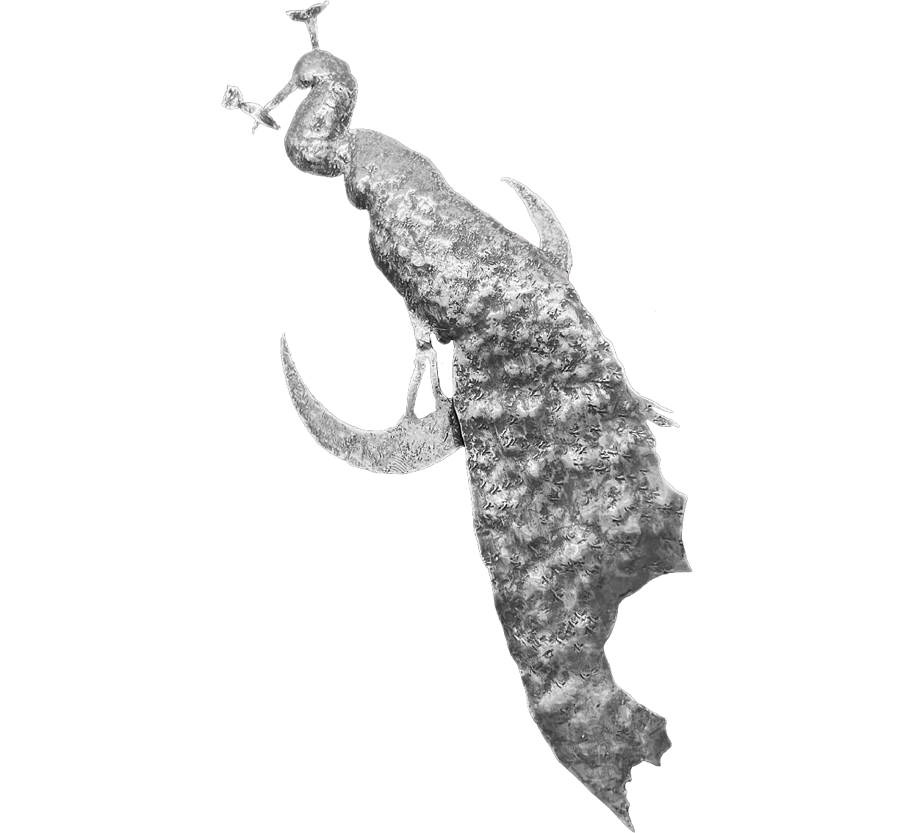
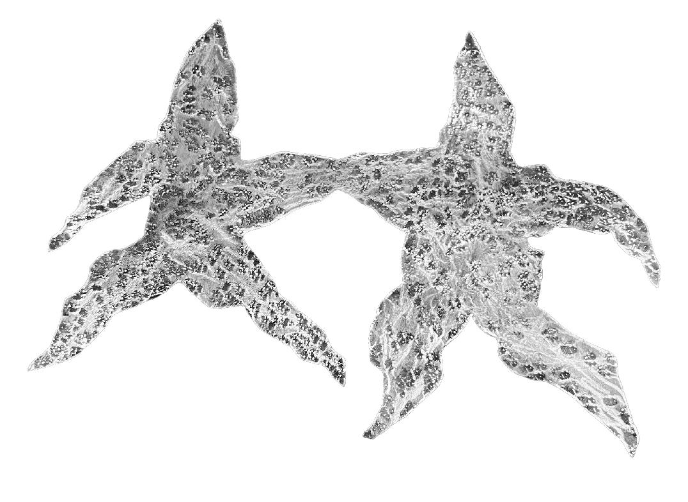
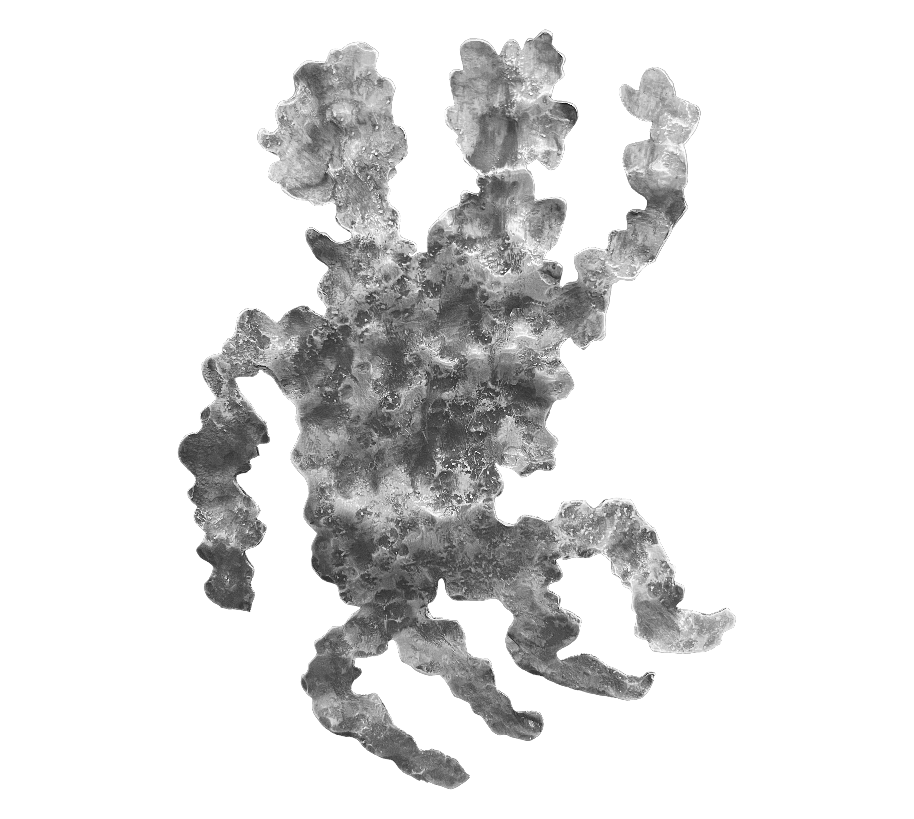

RCr 66 // Collective Research Archive
Ssymnac Cave Complex
by Manuel Phil. Bischof
Cereus ambiguus
Toxic defensive needles coexist with soft nutrient-rich fruit spines.

Opuntia dulcisferra
Underground water retention systems shared between neighboring root structures.

Viridiluma mollis
Small green organisms synchronizing body temperature during collective sleep.

Photosensitive Calcite Structures
Stalactite systems displaying growth behavior similar to phototropic plants.

Nebula Folia
Cave flora species activated through ritual smoke exposure.

Pelvibacter lucens
Fluorescent bacterial floor consortium producing bioluminescent mineral textures.

Lichen Exchange Systems
Mineral surfaces, bacterial films and plant spores forming long-term mutual growth structures.

Formica mycelia
Ant colonies cultivating fungal membranes through reciprocal nutrient exchange systems.

Somatic Exchange Networks
Human respiratory systems interacting continuously with bacterial cave atmospheres.

Aerosymbiont
Atmospheric signal organism fused with a human transmission system.

CareUnit-Seraph
Ritual attachment structure connecting biomechanical care systems and mineral memory.

Thermadrone
Hybrid cave organism merged with artificial skeletal drone structures.

Cervoid Interface
Forest mammal synchronization with abandoned navigational technologies.

Moonufowl
Synthetic feather systems evolving into autonomous emotional communication.

Stellar Drift Field
Interconnected stellar clusters producing low-frequency luminous communication patterns.

Genetic Dual Formation
Parallel human development systems showing synchronized biological and emotional growth patterns.

Ssymnac Cave Complex
Subterranean systems mediating exchanges between mineral formations, atmospheric flows, and multispecies biological residues.